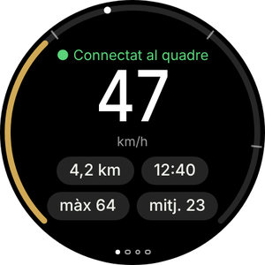
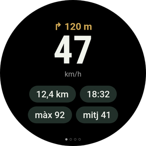
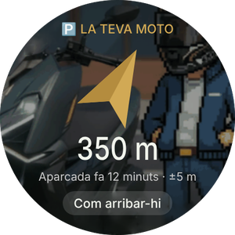
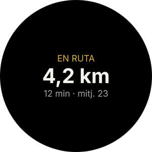
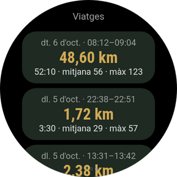
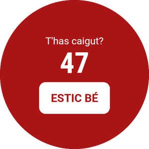
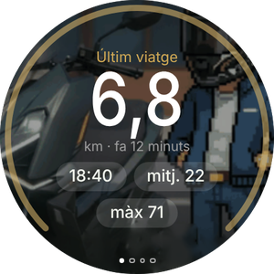
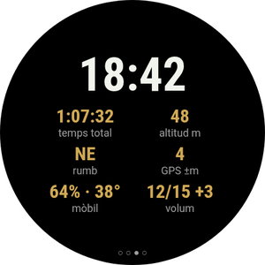

La teva moto al canell
L'app de Wear OS és opcional i va amb la del mòbil. Mostra la velocitat i la propera maniobra, vibra abans de cada gir, et porta fins a la moto aparcada i et deixa manejar Android Auto al quadre sense tocar el mòbil.
Encara no tens l'app al mòbil? Comença per la guia del mòbil.

El que veuràs al rellotge






- Un rellotge amb Wear OS 3 o posterior: Galaxy Watch 4 i següents, Pixel Watch i altres. Els de Huawei, Amazfit o Garmin no fan servir Wear OS i no serveixen.
- El rellotge ja emparellat amb el teu mòbil, i RideScreen AA 2.2 o posterior instal·lada al mòbil.
- El mòbil i el rellotge a la mateixa xarxa Wi‑Fi (la de casa, per exemple). Només cal per a aquesta instal·lació.
- Uns 10–15 minuts. Es fa un sol cop: les versions següents s'instal·len des del mòbil.
Instal·lar l'app al rellotge
Els rellotges no obren fitxers APK com el mòbil, així que aquest primer cop s'instal·la amb una app del mòbil que parla amb el rellotge per Wi‑Fi (depuració sense fil). Sona tècnic, però són uns quants tocs.
-
Descarrega l'APK del rellotge al mòbil
Toca el botó per descarregar directament l'APK del rellotge (el que acaba en WearOS-reloj.apk). Deixa'l a la carpeta Baixades.
Instal·la també al mòbil una d'aquestes apps de Play Store: Wear Installer 2 o Bugjaeger.
Descarregar l’APK del rellotge -
Activa les opcions de desenvolupador del rellotge
Galaxy Watch: Configuració → Quant al rellotge → Informació del programari → toca Versió del programari 5 vegades.
Pixel Watch i altres: Configuració → Sistema → Informació → toca Número de compilació 7 vegades.
Apareix l'avís que les opcions de desenvolupador estan activades.
-
Connecta el rellotge al Wi‑Fi
Configuració → Connexions → Wi‑Fi: posa'l a Activat (no a Automàtic) i connecta'l a la mateixa xarxa que el mòbil.
Si més endavant el rellotge no mostra adreça IP, desactiva un moment el Bluetooth del mòbil: el rellotge només fa servir el Wi‑Fi quan no té el mòbil per Bluetooth. -
Activa la depuració sense fil
Configuració → Opcions de desenvolupador → activa Depuració ADB i Depuració sense fil. Entra a Depuració sense fil → Emparella un dispositiu nou.
El rellotge mostra un codi de 6 xifres i una adreça amb port, per exemple 192.168.1.40:37115.
Puja abans el temps de pantalla del rellotge: si s'apaga mentre emparelles, el codi caduca. -
Emparella i instal·la des del mòbil
Obre Wear Installer 2 (o Bugjaeger), escriu l'adreça i el codi d'emparellament, i després connecta amb l'adreça que apareix a la pantalla de Depuració sense fil.
Tria el fitxer …-WearOS-reloj.apk de Baixades i instal·la'l. En un minut apareix RideScreen AA al rellotge.
El port per emparellar i el port per connectar són diferents. És l'error més habitual. -
Obre-la i apaga la depuració
Obre RideScreen AA al rellotge i accepta la ubicació (per a la brúixola cap a la teva moto) i les notificacions.
Ja pots desactivar la depuració sense fil i la depuració ADB: no calen per fer-la servir ni per actualitzar-la.

Controlar Android Auto des del rellotge
El quadre de la Zontes no és tàctil. Amb el rellotge manegues Android Auto com amb el comandament d'un cotxe: una roda per moure't per la pantalla i botons per triar, tornar o parlar amb l'Assistent.
La creueta (llisca a la segona pàgina)
- ▲ ▼Toc: gira la roda d'Android Auto, salta d'un element a l'altre. Mantenir: fletxa amunt o avall.
- ◀ ▶Fletxes esquerra i dreta: canviar de columna o de pestanya.
- OKTriar el que està marcat.
- ↩Enrere.
- ⌂Inici d'Android Auto.
- 🎤Assistent de Google («porta'm a…», «posa música»).
- 📊Tornar a les dades del viatge.
Amb bisell giratori o corona
Galaxy Watch Classic, Pixel Watch i rellotges amb corona que gira.
- Gira el bisell o la corona per moure't per Android Auto, igual que la roda d'un cotxe. Funciona a qualsevol pàgina del rellotge.
- Prem OK a la creueta per triar.
- A la pàgina de Viatges, el bisell desplaça la llista en lloc de moure Android Auto.
Sense bisell
Galaxy Watch normals (4, 5, 6, 7…) i rellotges de pantalla llisa.
- Els botons ▲ ▼ de la creueta fan de roda: un toc, un pas.
- Mantén-los premuts quan necessitis la fletxa de debò, per exemple per pujar en una llista.
- Als Galaxy Watch amb bisell tàctil, pots activar-lo als ajustos del rellotge i lliscar el dit per la vora de la pantalla com si fos el bisell.
Les pàgines de l'app
Llisca a esquerra i dreta. Els punts de baix indiquen a quina pàgina ets.

Vibracions de gir
Amb la navegació d'Android Auto, el rellotge vibra abans de cada maniobra: 2 tocs a l'esquerra, 3 a la dreta, un de llarg i N de curts per a la sortida N d'una rotonda i dos de llargs per a un canvi de sentit.
S'activa al mòbil: ⚙️ Ajustos → Extres de ruta → Vibracions de gir al rellotge. És experimental.
Targeta i complicació
Afegeix la targeta Viatge (llisca des de l'esfera i toca +) per veure el viatge en curs o on has aparcat. La complicació RideScreen · km posa els km del viatge a la teva esfera.
Actualitzar el rellotge
-
Des del mòbil, sense ordinador
A partir de la versió 2.2, quan surti una versió nova: al mòbil, ❓ Ajuda → ⌚ Actualitza l'app del rellotge → Última versió.
El mòbil descarrega l'app del rellotge i l'hi envia per Bluetooth. Triga un parell de minuts: veuràs el progrés al mòbil i al rellotge. En acabar, toca Instal·la al rellotge.
El primer cop, el rellotge et demanarà permetre que RideScreen AA instal·li apps: activa-ho i torna enrere.
Problemes habituals
El rellotge no mostra adreça IPEn activar la depuració sense fil
- Posa el Wi‑Fi del rellotge a Activat, no a Automàtic, i connecta'l a la mateixa xarxa que el mòbil.
- Desactiva un moment el Bluetooth del mòbil perquè el rellotge passi a fer servir el Wi‑Fi. Torna'l a activar en acabar.
Wear Installer no connectaEn emparellar
- Fes servir el port d' Emparella un dispositiu nou per emparellar, i el de la pantalla principal de Depuració sense fil per connectar. Són diferents.
- Si el codi ha caducat, torna a tocar Emparella un dispositiu nou: en surt un de nou.
"El paquet no és vàlid"En instal·lar
Probablement és l'APK del mòbil. Al rellotge va el que acaba en WearOS-reloj.apk.
El rellotge diu "Sense dades del mòbil"Amb l'app instal·lada
- Obre RideScreen AA al mòbil almenys un cop i comprova que el rellotge està connectat al mòbil (app Galaxy Wearable o Pixel Watch).
- L'app del mòbil i la del rellotge han de venir de la mateixa pàgina de descàrregues: no s'entenen amb la versió de Play Store ni amb l'OpenCfMoto original.
"⚠️ Inicia el servidor d'AA"A la pàgina del viatge
El servidor d'unitat principal d'Android Auto està apagat al mòbil. A Android Auto: ⋮ → Inicia el servidor d'unitat principal (pas 6 de la guia del mòbil).
"Aquest rellotge no deixa que les apps instal·lin actualitzacions"En actualitzar des del mòbil
El teu rellotge no permet que una app n'instal·li una altra. Instal·la la versió nova com el primer cop (Part 1).
Res del que hi ha a daltCom demanar ajuda
Al mòbil toca ❓ Ajuda → Compartir registres i envia-ho al grup dient el model de rellotge i de mòbil.
RideScreen AA és gratuïta i de codi obert, basada en OpenCfMoto d'Alexandru (zanderp). No és una app oficial de Zontes ni de Google. Les pantalles són il·lustratives: els noms exactes dels ajustos poden variar segons el teu rellotge. · Guia del mòbil